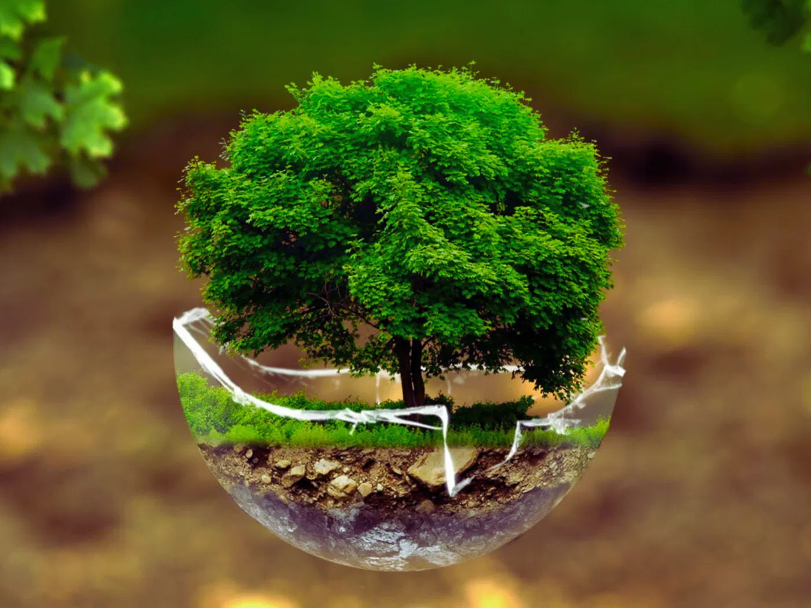

Sostenibilidad y Responsabilidad Social
Comprometidos con un futuro donde la salud y el planeta prosperen juntos.
Compromiso con el Medio Ambiente
En Bial Medical Technologies, estamos comprometidos con la sostenibilidad y la innovación para minimizar nuestro impacto ambiental y fomentar un desarrollo logístico sostenible.

Eficiencia Energética y Reducción de Huella de Carbono
- Implementamos centros de datos con consumo energético optimizado.
- Usamos fuentes de energía renovable para reducir la emisión de carbono.
- Optimizamos procesos logísticos para minimizar el impacto ambiental.
Reciclaje y Gestión Responsable de Residuos
- Reciclamos componentes electrónicos y materiales blandos.
- Colaboramos con proveedores certificados ecológicamente.
Uso Responsable de Recursos
- Reducimos el consumo de agua mediante tecnologías de reciclado.
- Utilizamos materiales sostenibles en la fabricación de productos.

Responsabilidad Social Empresarial
En Bial Medical Technologies, creemos que la tecnología debe ser una herramienta para enfocarse en mejorar el acceso a servicios de salud y apoyar a las comunidades más vulnerables.
Acceso a la Salud en Comunidades Rurales
- Donación de equipos de diagnóstico asistido por IA a hospitales rurales.
- Capacitación para personal médico en áreas de difícil acceso.
- Proyectos de telemedicina para conectar a especialistas con comunidades remotas.
Programas de Capacitación y Formación
- Alianzas con universidades y centros de salud para formar profesionales en tecnología médica.
- Programas gratuitos de certificación para médicos y personal técnico.
Colaboración con ONGs y Gobiernos Locales
- Desarrollo de tecnologías de monitoreo e infraestructura de salud en comunidades vulnerables.
- Convenios de telemedicina con hospitales públicos y centros rurales.
- Participación en campañas de prevención y educación sanitaria.